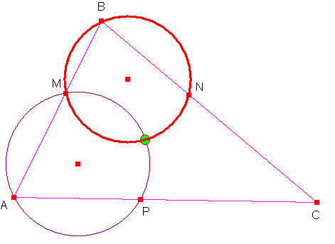
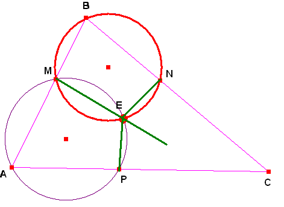
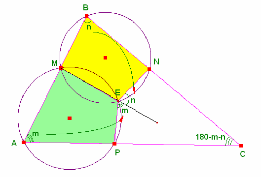
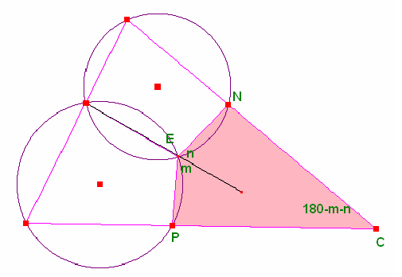
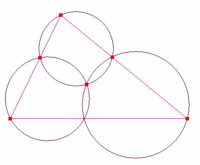

Problema 294
For a triangle ABC and
three points A', B', and C', one on each of its sides, the three Miquel circles are the circles passing through each polygon
vertex and its neighboring side points (i.e., AC'B',
BA'C', and CB'A'). According to Miquel's theorem, the
Miquel circles are concurrent in a point M known as
the Miquel point
.Para un triánguloABC y tres puntosA', B', y C', uno en cada uno de sus lados , las tres circunferencias de Miquel sson las que pasan por cada vértice y los puntos sobre los
lados correspondientes ( es decir, por AC'B', BA'C', y C B'A'). De acuerdo con
el teorema de Miquel, las circunferencias de Miquel son concurrentes en un
punto M conocido como punto de Miquel.
Eric W. Weisstein. "Miquel
Triangle." From MathWorld--A
Wolfram Web Resource.
http://mathworld.wolfram.com/MiquelsTheorem.html
Solución de William Rodríguez Chamache. profesor de geometria de la "Academia integral class" Trujillo- Perú (2 de febrero de 2006)
Por los puntos M, N, B y A, M y P pasa dos circunferencia

Ahora observamos que los cuadriláteros AMEP y MBNE son inscriptibles

Ahora observamos que en el cuadrilátero PENC la suma del ángulo opuesto suma 180

Finalmente el cuadrilátero PENC es inscriptible por lo tanto las tres circunferencias pasa por el punto E (denominado punto de Miquel)

